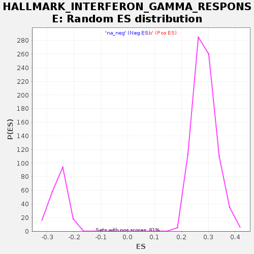

| | | Dataset | GSE18198_cov_collapsed |
| Phenotype | NoPhenotypeAvailable |
| Upregulated in class | na_neg |
| GeneSet | HALLMARK_INTERFERON_GAMMA_RESPONSE |
| Enrichment Score (ES) | -0.4073794 |
| Normalized Enrichment Score (NES) | -1.5842125 |
| Nominal p-value | 0.0 |
| FDR q-value | 0.0076116435 |
| FWER p-Value | 0.033 |
Table: GSEA Results Summary
 Fig 1: Enrichment plot: HALLMARK_INTERFERON_GAMMA_RESPONSE
Fig 1: Enrichment plot: HALLMARK_INTERFERON_GAMMA_RESPONSE
Profile of the Running ES Score & Positions of GeneSet Members on the Rank Ordered List
| SYMBOL | TITLE | RANK IN GENE LIST | RANK METRIC SCORE | RUNNING ES | CORE ENRICHMENT | | 1 | TNFAIP3 | NA | 4 | 2.814 | 0.0368 | No |
| 2 | LATS2 | NA | 423 | 1.126 | 0.0314 | No |
| 3 | SOCS3 | NA | 572 | 1.002 | 0.0374 | No |
| 4 | PARP14 | NA | 606 | 0.976 | 0.0487 | No |
| 5 | FAS | NA | 821 | 0.865 | 0.0497 | No |
| 6 | RNF31 | NA | 907 | 0.831 | 0.0566 | No |
| 7 | CD40 | NA | 996 | 0.803 | 0.0629 | No |
| 8 | IL10RA | NA | 1035 | 0.790 | 0.0714 | No |
| 9 | HERC6 | NA | 1107 | 0.764 | 0.0780 | No |
| 10 | DDX58 | NA | 1182 | 0.739 | 0.0842 | No |
| 11 | MARCHF1 | NA | 1632 | 0.625 | 0.0707 | No |
| 12 | NFKBIA | NA | 2054 | 0.549 | 0.0577 | No |
| 13 | BANK1 | NA | 2155 | 0.536 | 0.0599 | No |
| 14 | SELP | NA | 2169 | 0.535 | 0.0663 | No |
| 15 | TNFAIP6 | NA | 2289 | 0.520 | 0.0674 | No |
| 16 | TXNIP | NA | 2364 | 0.509 | 0.0705 | No |
| 17 | CD69 | NA | 2493 | 0.492 | 0.0708 | No |
| 18 | SLC25A28 | NA | 2525 | 0.488 | 0.0757 | No |
| 19 | CFB | NA | 2856 | 0.448 | 0.0657 | No |
| 20 | ZBP1 | NA | 2876 | 0.446 | 0.0706 | No |
| 21 | PTPN2 | NA | 2932 | 0.443 | 0.0738 | No |
| 22 | SSPN | NA | 2946 | 0.442 | 0.0790 | No |
| 23 | GBP6 | NA | 2994 | 0.439 | 0.0825 | No |
| 24 | IFITM3 | NA | 3038 | 0.434 | 0.0861 | No |
| 25 | JAK2 | NA | 3044 | 0.433 | 0.0916 | No |
| 26 | METTL7B | NA | 3130 | 0.422 | 0.0930 | No |
| 27 | B2M | NA | 3208 | 0.415 | 0.0948 | No |
| 28 | XCL1 | NA | 3245 | 0.411 | 0.0984 | No |
| 29 | LYSMD2 | NA | 3287 | 0.407 | 0.1018 | No |
| 30 | IFI44 | NA | 3329 | 0.403 | 0.1051 | No |
| 31 | CASP8 | NA | 3717 | 0.367 | 0.0913 | No |
| 32 | STAT2 | NA | 3782 | 0.363 | 0.0929 | No |
| 33 | PSMA3 | NA | 3902 | 0.352 | 0.0918 | No |
| 34 | CD86 | NA | 4056 | 0.338 | 0.0889 | No |
| 35 | STAT1 | NA | 4193 | 0.328 | 0.0867 | No |
| 36 | EPSTI1 | NA | 4250 | 0.323 | 0.0882 | No |
| 37 | IDO1 | NA | 4251 | 0.323 | 0.0924 | No |
| 38 | IFNAR2 | NA | 4482 | 0.306 | 0.0854 | No |
| 39 | VAMP8 | NA | 4497 | 0.304 | 0.0887 | No |
| 40 | NUP93 | NA | 4641 | 0.294 | 0.0857 | No |
| 41 | SOCS1 | NA | 4738 | 0.288 | 0.0848 | No |
| 42 | CXCL9 | NA | 4871 | 0.279 | 0.0821 | No |
| 43 | SLAMF7 | NA | 4900 | 0.277 | 0.0844 | No |
| 44 | MT2A | NA | 5050 | 0.268 | 0.0808 | No |
| 45 | IFIT3 | NA | 5092 | 0.265 | 0.0823 | No |
| 46 | VAMP5 | NA | 5175 | 0.260 | 0.0817 | No |
| 47 | HLA-DQA1 | NA | 5191 | 0.259 | 0.0844 | No |
| 48 | IFITM2 | NA | 5210 | 0.258 | 0.0869 | No |
| 49 | IFIT1 | NA | 5536 | 0.241 | 0.0744 | No |
| 50 | SAMHD1 | NA | 5695 | 0.232 | 0.0699 | No |
| 51 | RBCK1 | NA | 5742 | 0.230 | 0.0707 | No |
| 52 | PDE4B | NA | 5949 | 0.219 | 0.0636 | No |
| 53 | XAF1 | NA | 5954 | 0.219 | 0.0663 | No |
| 54 | RIPK2 | NA | 6058 | 0.214 | 0.0642 | No |
| 55 | STAT3 | NA | 6140 | 0.209 | 0.0630 | No |
| 56 | PLA2G4A | NA | 6145 | 0.209 | 0.0656 | No |
| 57 | TRIM14 | NA | 6153 | 0.209 | 0.0680 | No |
| 58 | IRF4 | NA | 6156 | 0.208 | 0.0706 | No |
| 59 | HLA-DRB1 | NA | 6192 | 0.207 | 0.0716 | No |
| 60 | IFIT2 | NA | 6373 | 0.198 | 0.0656 | No |
| 61 | IRF5 | NA | 6382 | 0.198 | 0.0678 | No |
| 62 | TAP1 | NA | 6390 | 0.197 | 0.0700 | No |
| 63 | FCGR1A | NA | 6441 | 0.195 | 0.0702 | No |
| 64 | KLRK1 | NA | 6774 | 0.181 | 0.0566 | No |
| 65 | PELI1 | NA | 6928 | 0.174 | 0.0515 | No |
| 66 | NCOA3 | NA | 6946 | 0.174 | 0.0529 | No |
| 67 | SERPING1 | NA | 7162 | 0.166 | 0.0448 | No |
| 68 | BPGM | NA | 7214 | 0.164 | 0.0445 | No |
| 69 | IFIH1 | NA | 7235 | 0.163 | 0.0456 | No |
| 70 | CD74 | NA | 7491 | 0.153 | 0.0353 | No |
| 71 | CCL5 | NA | 7494 | 0.153 | 0.0373 | No |
| 72 | CIITA | NA | 7760 | 0.143 | 0.0264 | No |
| 73 | CXCL10 | NA | 7844 | 0.140 | 0.0242 | No |
| 74 | IL6 | NA | 7852 | 0.140 | 0.0257 | No |
| 75 | FPR1 | NA | 8116 | 0.130 | 0.0148 | No |
| 76 | NAMPT | NA | 8388 | 0.120 | 0.0033 | No |
| 77 | NOD1 | NA | 8440 | 0.118 | 0.0024 | No |
| 78 | ARID5B | NA | 8583 | 0.115 | -0.0030 | No |
| 79 | CMKLR1 | NA | 8686 | 0.111 | -0.0064 | No |
| 80 | CASP3 | NA | 8919 | 0.104 | -0.0162 | No |
| 81 | RSAD2 | NA | 8972 | 0.102 | -0.0174 | No |
| 82 | IL18BP | NA | 9177 | 0.097 | -0.0260 | No |
| 83 | PTPN1 | NA | 9307 | 0.093 | -0.0310 | No |
| 84 | CSF2RB | NA | 9333 | 0.092 | -0.0309 | No |
| 85 | BTG1 | NA | 9532 | 0.087 | -0.0394 | No |
| 86 | BATF2 | NA | 9571 | 0.085 | -0.0401 | No |
| 87 | CCL2 | NA | 9656 | 0.083 | -0.0430 | No |
| 88 | CCL7 | NA | 9921 | 0.075 | -0.0548 | No |
| 89 | IL7 | NA | 9968 | 0.074 | -0.0560 | No |
| 90 | RTP4 | NA | 10043 | 0.072 | -0.0586 | No |
| 91 | GBP4 | NA | 10241 | 0.066 | -0.0673 | No |
| 92 | LCP2 | NA | 10304 | 0.064 | -0.0694 | No |
| 93 | VCAM1 | NA | 10339 | 0.064 | -0.0702 | No |
| 94 | CXCL11 | NA | 10353 | 0.063 | -0.0700 | No |
| 95 | SAMD9L | NA | 10457 | 0.060 | -0.0742 | No |
| 96 | RAPGEF6 | NA | 10889 | 0.049 | -0.0943 | No |
| 97 | ARL4A | NA | 11066 | 0.044 | -0.1022 | No |
| 98 | HLA-DMA | NA | 11213 | 0.041 | -0.1087 | No |
| 99 | CMTR1 | NA | 11246 | 0.040 | -0.1097 | No |
| 100 | ICAM1 | NA | 11370 | 0.037 | -0.1152 | No |
| 101 | TAPBP | NA | 11377 | 0.037 | -0.1150 | No |
| 102 | ST3GAL5 | NA | 11404 | 0.036 | -0.1158 | No |
| 103 | TRAFD1 | NA | 11628 | 0.031 | -0.1261 | No |
| 104 | HELZ2 | NA | 11720 | 0.029 | -0.1301 | No |
| 105 | SOD2 | NA | 12187 | 0.020 | -0.1523 | No |
| 106 | IL15 | NA | 12216 | 0.019 | -0.1534 | No |
| 107 | C1S | NA | 12239 | 0.019 | -0.1542 | No |
| 108 | HLA-B | NA | 12293 | 0.018 | -0.1565 | No |
| 109 | BST2 | NA | 12297 | 0.018 | -0.1564 | No |
| 110 | CD274 | NA | 12340 | 0.017 | -0.1582 | No |
| 111 | ST8SIA4 | NA | 12358 | 0.017 | -0.1588 | No |
| 112 | PSMB8 | NA | 12454 | 0.015 | -0.1632 | No |
| 113 | PTGS2 | NA | 12640 | 0.011 | -0.1720 | No |
| 114 | IRF9 | NA | 12644 | 0.011 | -0.1720 | No |
| 115 | SP110 | NA | 12901 | 0.005 | -0.1843 | No |
| 116 | SPPL2A | NA | 13050 | 0.002 | -0.1914 | No |
| 117 | IRF2 | NA | 13245 | -0.001 | -0.2007 | No |
| 118 | OASL | NA | 13308 | -0.002 | -0.2037 | No |
| 119 | PSMA2 | NA | 13525 | -0.007 | -0.2140 | No |
| 120 | PSME1 | NA | 13535 | -0.007 | -0.2143 | No |
| 121 | OAS3 | NA | 13771 | -0.012 | -0.2255 | No |
| 122 | HLA-G | NA | 13800 | -0.012 | -0.2267 | No |
| 123 | OAS2 | NA | 13894 | -0.015 | -0.2310 | No |
| 124 | CASP4 | NA | 13938 | -0.015 | -0.2328 | No |
| 125 | IFI35 | NA | 13995 | -0.017 | -0.2353 | No |
| 126 | RNF213 | NA | 14149 | -0.020 | -0.2424 | No |
| 127 | APOL6 | NA | 14239 | -0.022 | -0.2464 | No |
| 128 | PML | NA | 14393 | -0.025 | -0.2535 | No |
| 129 | NMI | NA | 14614 | -0.029 | -0.2637 | No |
| 130 | PSMB2 | NA | 14886 | -0.037 | -0.2763 | No |
| 131 | HLA-A | NA | 15405 | -0.055 | -0.3005 | No |
| 132 | AUTS2 | NA | 15709 | -0.068 | -0.3142 | No |
| 133 | P2RY14 | NA | 15938 | -0.079 | -0.3242 | No |
| 134 | EIF2AK2 | NA | 15974 | -0.081 | -0.3248 | No |
| 135 | IFI44L | NA | 16030 | -0.083 | -0.3264 | No |
| 136 | TOR1B | NA | 16237 | -0.092 | -0.3351 | No |
| 137 | MTHFD2 | NA | 16253 | -0.093 | -0.3346 | No |
| 138 | FGL2 | NA | 16433 | -0.101 | -0.3419 | No |
| 139 | CD38 | NA | 16491 | -0.104 | -0.3433 | No |
| 140 | MX2 | NA | 16598 | -0.109 | -0.3469 | No |
| 141 | TNFAIP2 | NA | 16796 | -0.119 | -0.3549 | No |
| 142 | NLRC5 | NA | 16877 | -0.124 | -0.3571 | No |
| 143 | EIF4E3 | NA | 16903 | -0.126 | -0.3566 | No |
| 144 | DHX58 | NA | 17369 | -0.160 | -0.3770 | No |
| 145 | PLSCR1 | NA | 17653 | -0.182 | -0.3882 | No |
| 146 | DDX60 | NA | 17668 | -0.183 | -0.3865 | No |
| 147 | CASP1 | NA | 17680 | -0.184 | -0.3846 | No |
| 148 | UPP1 | NA | 17717 | -0.187 | -0.3839 | No |
| 149 | HIF1A | NA | 17738 | -0.190 | -0.3823 | No |
| 150 | TRIM25 | NA | 17889 | -0.204 | -0.3869 | No |
| 151 | OGFR | NA | 17984 | -0.212 | -0.3886 | No |
| 152 | GCH1 | NA | 18073 | -0.223 | -0.3899 | No |
| 153 | MX1 | NA | 18186 | -0.235 | -0.3923 | No |
| 154 | PIM1 | NA | 18221 | -0.239 | -0.3907 | No |
| 155 | PSME2 | NA | 18297 | -0.247 | -0.3911 | No |
| 156 | CMPK2 | NA | 18389 | -0.258 | -0.3921 | No |
| 157 | SECTM1 | NA | 18413 | -0.261 | -0.3898 | No |
| 158 | CDKN1A | NA | 18570 | -0.283 | -0.3936 | No |
| 159 | ISOC1 | NA | 18606 | -0.290 | -0.3915 | No |
| 160 | IRF7 | NA | 18610 | -0.291 | -0.3878 | No |
| 161 | TNFSF10 | NA | 19017 | -0.361 | -0.4026 | Yes |
| 162 | IFI27 | NA | 19034 | -0.364 | -0.3986 | Yes |
| 163 | CASP7 | NA | 19202 | -0.398 | -0.4014 | Yes |
| 164 | IFI30 | NA | 19203 | -0.398 | -0.3962 | Yes |
| 165 | PSMB10 | NA | 19241 | -0.407 | -0.3926 | Yes |
| 166 | RIPK1 | NA | 19302 | -0.422 | -0.3900 | Yes |
| 167 | TDRD7 | NA | 19467 | -0.466 | -0.3918 | Yes |
| 168 | PSMB9 | NA | 19510 | -0.477 | -0.3875 | Yes |
| 169 | C1R | NA | 19670 | -0.528 | -0.3883 | Yes |
| 170 | UBE2L6 | NA | 19721 | -0.541 | -0.3836 | Yes |
| 171 | MVP | NA | 19761 | -0.559 | -0.3781 | Yes |
| 172 | IL15RA | NA | 19864 | -0.598 | -0.3752 | Yes |
| 173 | IL4R | NA | 19912 | -0.620 | -0.3693 | Yes |
| 174 | PTPN6 | NA | 19914 | -0.621 | -0.3612 | Yes |
| 175 | ITGB7 | NA | 19992 | -0.656 | -0.3563 | Yes |
| 176 | USP18 | NA | 20017 | -0.667 | -0.3487 | Yes |
| 177 | PNP | NA | 20052 | -0.688 | -0.3413 | Yes |
| 178 | TRIM26 | NA | 20061 | -0.692 | -0.3326 | Yes |
| 179 | ISG20 | NA | 20166 | -0.754 | -0.3277 | Yes |
| 180 | ISG15 | NA | 20216 | -0.789 | -0.3197 | Yes |
| 181 | IRF1 | NA | 20220 | -0.790 | -0.3094 | Yes |
| 182 | WARS1 | NA | 20237 | -0.801 | -0.2997 | Yes |
| 183 | SRI | NA | 20348 | -0.894 | -0.2932 | Yes |
| 184 | IRF8 | NA | 20358 | -0.900 | -0.2818 | Yes |
| 185 | PARP12 | NA | 20462 | -1.001 | -0.2736 | Yes |
| 186 | MYD88 | NA | 20467 | -1.013 | -0.2605 | Yes |
| 187 | ZNFX1 | NA | 20475 | -1.020 | -0.2475 | Yes |
| 188 | LGALS3BP | NA | 20485 | -1.029 | -0.2344 | Yes |
| 189 | IL2RB | NA | 20505 | -1.055 | -0.2214 | Yes |
| 190 | CFH | NA | 20550 | -1.106 | -0.2090 | Yes |
| 191 | NFKB1 | NA | 20585 | -1.152 | -0.1955 | Yes |
| 192 | TRIM21 | NA | 20618 | -1.191 | -0.1814 | Yes |
| 193 | ADAR | NA | 20627 | -1.212 | -0.1659 | Yes |
| 194 | STAT4 | NA | 20634 | -1.221 | -0.1502 | Yes |
| 195 | GZMA | NA | 20814 | -1.630 | -0.1374 | Yes |
| 196 | LAP3 | NA | 20833 | -1.741 | -0.1154 | Yes |
| 197 | PNPT1 | NA | 20864 | -2.015 | -0.0904 | Yes |
| 198 | GPR18 | NA | 20868 | -2.018 | -0.0640 | Yes |
| 199 | PFKP | NA | 20916 | -2.410 | -0.0346 | Yes |
| 200 | LY6E | NA | 20929 | -2.743 | 0.0009 | Yes |
Table: GSEA details [plain text format]

Fig 2: HALLMARK_INTERFERON_GAMMA_RESPONSE: Random ES distribution
Gene set null distribution of ES for HALLMARK_INTERFERON_GAMMA_RESPONSE